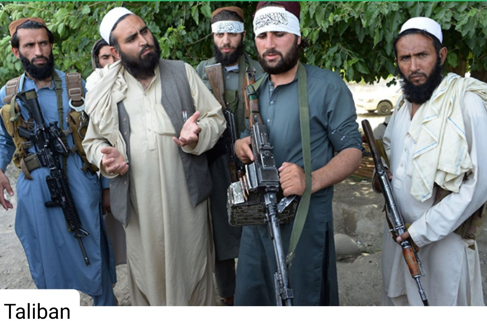

Afghanistan's History
Afghanistan has a rich and diverse history that dates back thousands of years. The region has been inhabited by different ethnic groups and has been influenced by numerous the Persian, Greek, Buddhist, Islamic, and Mongol empire. The history of Afghanistan, preceding the establishment of the Emirate of Afghanistan in 1823 is shared with that of neighboring Iran, central Asia, and Indian subcontinent. The Sadozai monarchy ruled the Afghan Durrani Empire, considered the founding state of modern Afghanistan. Afghanistan is a landlocked country located at the crossroads of Central Asia and South Asia. Referred to as the Heart of Asia, it is bordered by Pakistan to the east and south, Iran to the west, Turkmenistan to the northwest, Uzbekistan to the north, Tajikistan to the northeast, and China to the northeast and east. The Durrani Empire is considered to be the foundational polity of the modern nation-state of Afghanistan, with Ahmad Shah Durrani being credited as its Father of the Nation. However, Dost Mohammad Khan is sometimes considered to be the founder of the first modern Afghanistan state. Following the Durrani Empire’s decline and the death of Ahmad Shah Durrani and Timur Shah, it was divided into multiple smaller independent kingdoms, including but not limited to Heart, Kandahar and Kabul.
Important Events of Afghanistan
Afghanistan's Independence
The First Anglo-Afghan War was fought between the British Empire and the Emirate of Kabul from 1838 to 1842. The conflict arose as part of the Great Game, a 19th-century competition for power and influence in Central Asia between Britain and Russia. The British initially invaded Afghanistan to intervene in a succession dispute between Emir Dost Mohammad Khan and former King Shah Shujah. The British reinstalled Shah Shujah upon occupying Kabul in August 1839, but their main force and camp followers were almost completely massacred during the 1842 retreat from Kabul. The British then sent an Army of Retribution to Kabul to avenge the destruction of the previous forces. After recovering prisoners, they left Afghanistan by the end of the year, and Dost Mohammed returned from exile in India to resume his rule. The war had a significant impact on the diplomatic relations between Britain and Russia during the 19th century. After tension between Russia and British in Europe ended with the June 1878 Congress of Berlin, Russia turned its attention to Central Asia. That same It was a military conflict fought between the British Raj and the Emirate of Afghanistan from 1878 to 1880, when the tatter was ruled by Sher Ali Khan of the Barakzai dynasty, the son of former Emir Dost Mohammed Khan. The war was part of the Great Gama between the British and Russian empires. The war was split two campaigns – the first began in November 1878 with the British invasion of Afghanistan from India. The British were quickly victorious and forced the Amir Sher Ali Khan to flee. Ali’s successor Mohammed Yaqub Khan immediately sued for peace and the Treaty of Ganadamak was then signed on 26 May 1879. On August 19, Afghans celebrate anniversary of gaining of their country’s independence the form then Great Britain, that ruled India and Pakistan from 1858-1947 and dominated Afghanistan’s foreign affairs from 1880-1919. Although historians contest the exact course of events leading of Afghan independence as well as the scale of sovereignty achieved in 1919 – the day resonates with all Afghans, regardless of their age, ethnic, religious, linguistic and even political backgrounds. King Amanullah Khan declared independence in 1919 and pursed and independent foreign policy free from the influence of the then Britain. The day also reminds people of how the ancestors fought in unity and gained the honor that comes with the creation of a united, independent nation that holds a common meaning for every citizen, which is that all Afghans need to work together for prosperity of their country and once again prove that Afghans are united as one nation that cannot be divided. The Afghan people have been widely known for their love of poetry and classic art and painting well displayed through many of its monumental landmarks and heritage sites. Afghanistan has a rich and diverse history that dates back thousands of years. The region has been inhabited by various ethnic groups and has been influenced by numerous empires and civilizations, including the Persian, Greek, Buddhist, Islamic, and Mongol empires.
Economical History of Afghanistan
Afghanistan's economy has historically been heavily reliant on agriculture, with the majority of the population engaged in farming. The country is known for producing fruits, nuts, and grains such as pomegranates, almonds, and wheat. In recent years, Afghanistan has also seen growth in industries such as mining and telecommunications. However, the country continues to face challenges such as political instability, corruption, and security concerns that have hindered economic development. Afghanistan is a diverse country with a rich cultural heritage that is influenced by its various ethnic groups, including Pashtuns, Tajiks, Hazaras, Uzbeks, and others. The culture of Afghanistan is characterized by its traditional music, dance, poetry, and storytelling. The country is also known for its traditional clothing such as the shalwar kameez for men and women. Afghanistan has a long history of artistic expression dating back to ancient times. The country is known for its intricate architecture such as the famous minarets of Jam and the Buddhas of Bamiyan. Afghan art also includes traditional crafts such as pottery, carpet weaving, calligraphy, and miniature painting. In recent years, contemporary Afghan artists have gained international recognition for their work in painting, sculpture, photography, and other medium. The excerpt presents a collection of perspectives on the resurgence of the Taliban in Afghanistan and the rapid collapse of the US-backed Afghan government. It highlights the complex interplay of factors contributing to the Taliban's success, including disillusionment with the government, the Taliban's perceived affinity with Afghan values, and the surprise at the rapid military offensive. The passage features insights from various figures, including US officials expressing dismay at the Afghan forces' lack of resistance and the perceived failures in US intelligence assessments. There's a strong sentiment of frustration and surprise, with calls for accountability and demands for explanations regarding the misjudgment of the situation.
Who are the Taliban?
The Taliban, formed in 1994, initially comprised former Afghan resistance fighters, collectively known as mujahedeen, who had fought against Soviet forces in the 1980s. The group's primary aim was to establish their interpretation of Islamic law in Afghanistan, stripping away any foreign influence and imposing strict societal rules. This included imposing stringent restrictions on women's freedoms and banning forms of entertainment and non-Islamic celebrations. Their rise to power in 1996 saw the implementation of these strict rules, marking a period of significant societal transformation in Afghanistan, particularly concerning women's rights and individual freedoms. The events that transpired on September 11, 2001, thrust the Taliban into the global spotlight. The orchestrated attacks by al Qaeda, operating from Taliban-controlled Afghanistan, prompted a swift response from the United States and allied forces. The primary objectives were to dismantle the Taliban regime, eliminate the safe haven provided to al Qaeda, and prevent Afghanistan from serving as a base for further terrorist activities. Following the subsequent military intervention, the Taliban, ousted from power, continued to oppose the US-backed Afghan government and allied forces through an insurgency, perpetuating a prolonged period of conflict and instability in the region.
How did the Taliban take control of Afghnaistan?

In 1994, the Taliban gained control of numerous provinces after a period of civil war following the downfall of the Soviet-backed Afghan government in 1992. By September 1996, they seized Kabul, eliminating the country's president and instituting the Islamic Emirate of Afghanistan. During their rule, they offered sanctuary to al-Qaida until being overthrown by the US-led anti-al-Qaida campaign in 2001. Since then, the Taliban have been the primary instigators of insurgent aggression in Afghanistan. The response of the international community, especially the United States, to the tragic events of 9/11, was swift and determined. President George W. Bush held Al-Qaeda responsible for the attacks and placed multiple demands on the Taliban, including the extradition of Al-Qaeda leaders, the closure of terrorist training camps, and cooperation in anti-terrorism efforts. When the Taliban requested convincing evidence before complying, the stage was set for a significant international response, including military action and resolutions issued by the UN.The passage you've shared on the Taliban's return to power in 2021 paints a picture of the group's policies and actions across various domains. Their stance on women's rights, education policy, press freedom, and adherence to Sharia law is clearly outlined. Additionally, it's noted that the Taliban implemented strict Islamic laws, including banning activities like gambling, opium cultivation, and practices like bacha bazi.The Taliban's treatment of other Muslim communities, their suppression of movements like Salafism, and their enforcement of Sharia law, exemplify their influence on Afghan society and the changes they wrought during their previous rule. This comprehensive overview provides a detailed understanding of the complex nature of the Taliban's governance and their ideological foundations.The involvement of the Pakistani military and Inter-Services Intelligence (ISI) in supporting the Taliban was a significant factor in shaping the conflict. Reports indicating the training and deployment of tens of thousands of Pakistani nationals alongside the Taliban highlight the depth of external support received by the group. Furthermore, information from various sources, including the US State Department and Human Rights Watch, corroborates the extensive role played by Pakistan in sustaining and manipulating the fighting in Afghanistan. The formation of the United Front (Northern Alliance) led by Ahmad Shah Massoud and Abdul Rashid Dostum as a response to the growing influence of the Taliban demonstrates the multi-dimensional nature of the conflict. Their efforts to resist Taliban offensives and promote women's rights and equality in the areas under their control are significant factors in understanding the diverse responses to the Taliban's rule. Ahmad Shah Massoud was indeed a remarkable and influential force in Afghan history. His dedication to promoting democracy, his commitment to equal rights for both men and women, and his resolute stand against the oppressive cultural norms imposed by the Taliban highlight his pivotal role in challenging the status quo. Despite facing immense pressure from the Taliban, including offers of power in exchange for ending his resistance, Massoud remained steadfast in his commitment to democratic principles. He adamantly rejected compromising on the principles of modern democracy and refused the Taliban's conditions for a compromise, instead demanding their engagement in a political process leading to nationwide democratic elections. His efforts to unite different ethnic groups within Afghanistan and his warnings about the Taliban and Al-Qaeda's erroneous interpretation of Islam resonate significantly, especially in the context of the broader geopolitical environment.
The Taliban's Ascension to Power in Recent Years
The narrative surrounding the Taliban's swift rise to power is a complex and tumultuous one. The conquest of Kandahar in 1994 marked the beginning of their rapid expansion across Afghanistan. While they gained popularity for addressing issues of corruption and lawlessness, their attempts to capture Kabul were met with a decisive defeat by government forces led by Ahmad Shah Massoud.The Taliban's eventual entry into Kabul in 1996 marked the establishment of the Islamic Emirate of Afghanistan. During their rule from 1996 to 2001, they sought to establish an Islamic government based on a strict interpretation of Sharia law, leading to a highly repressive and authoritarian regime. Their control over 90% of Afghanistan by 1998 induced international condemnation and sanctions due to providing safe haven to terrorists like Osama bin Laden.The period of Taliban rule from 1996 to 2001 was marked by significant political upheaval and social challenges. The enforcement of strict punishments, including public executions and amputations, along with the deeply repressive and authoritarian nature of their regime, significantly impacted the Afghan populace and further intensified the socio-political landscape.The emergence of the Taliban in 1994 was a response to the dissatisfaction with the lack of Islamic law in Afghanistan following the ousting of communist rule. The original motivation of the Taliban was to establish law and order, rid the region of warlords and criminals, and impose a strict interpretation of Islamic law.The group was initially formed by Mullah Mohammad Omar and a small group of students in Kandahar, drawing support from former commanders of the Afghan-Soviet War as they sought to promote their vision of a strictly governed Islamic state. As the group rapidly gained support, it attracted thousands of students from Pakistan, reflecting its origins as a movement rooted in traditional Islamic schools.The Taliban's history is intertwined with a wide range of international and regional relationships. It has had various state and non-state allies and opponents, portraying a complex geopolitical landscape. Notable state allies have included countries like China, Iran, Pakistan, Qatar, Russia, Saudi Arabia, Turkmenistan, and the United Arab Emirates. Non-state allies have ranged from militant groups like Hamas, Turkistan Islamic Party, Hezb-e Islami Gulbuddin, Lashkar-e-Taiba, and, historically, Al-Qaeda, despite current denials.The recent resurgence of the Taliban, marked by the group's reconquest of Afghanistan and the subsequent establishment of its government in 2021, has drawn widespread condemnation due to its strict enforcement of Sharia law, human rights abuses, and restrictions on women's rights and education. This has resulted in the group being internationally condemned and ostracized, with its government unrecognized by any country.The Taliban's return to power has triggered concerns about the future of human rights, especially for women and girls in Afghanistan. The imposition of their strict interpretation of Islamic law has rekindled global attention and apprehension regarding the rights and freedoms of Afghan citizens.
Conclusion
Afghanistan has a rich and diverse history that dates back thousands of years, influenced by various empires and ethnic groups. The Durrani Empire is considered the foundational polity of modern Afghanistan, with Ahmad Shah Durrani credited as its Father of the Nation. The First Anglo-Afghan War in the 19th century had a significant impact on diplomatic relations between Britain and Russia. Afghanistan gained independence from Britain in 1919 under King Amanullah Khan, marking a significant day for all Afghans. This day serves as a reminder of unity and the need to work together for the prosperity of their country. n the mid-20th century, Afghanistan underwent significant social and political changes. In 1978, a communist government took power through a coup, sparking resistance from various factions, including Islamic fundamentalists known as the Mujahideen. The Soviet Union intervened in support of the communist government, leading to a decade-long conflict known as the Soviet-Afghan War. The Mujahideen eventually emerged victorious, and in 1992, a new government was formed with Burhanuddin Rabbani as president. However, the country remained unstable, with different factions vying for power and control. In 1996, the Taliban, an Islamist militant group, seized control of Kabul and established a strict regime based on their interpretation of Islamic law. The Taliban's rule was marked by human rights abuses, including the oppression of women and minorities.The September 11 attacks in 2001 led to the US-led invasion of Afghanistan and the overthrow of the Taliban government. A new government was formed under Hamid Karzai, and efforts were made to rebuild the country and establish democracy. However, the Taliban continued to launch attacks, and the conflict has continued to this day.The future of Afghanistan remains uncertain, with concerns about human rights, democracy, and stability. The international community continues to provide aid and support to the country, but the situation remains complex and challenging.